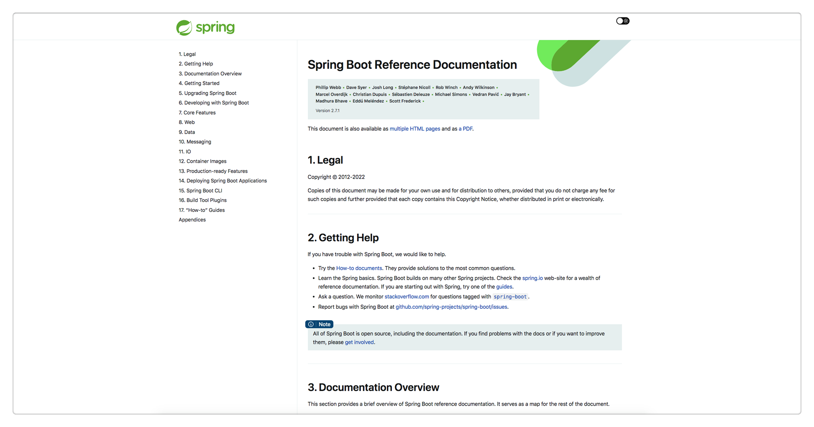

成年人最大的底气是你拥有一技之长，人生才不会被动。从事测试开发岗位，需要精通一门编程语言，是核心，是大招，是招牌技能。我内心一直在 Java 和 Python 之间选择，反复横跳。
在《2020 年度总结，似乎没有什么大的长进，似乎也得到了一些收获》中写到： “Python 编程。我并不是没有编程基础，汇编语言、C 语言、C++、数据结构、算法导论是大学必修课，我自己学过 JavaScript、Java（大学有选修课我没报） 和 Golang。我的问题有 2 个，一个是同学对比下的挫败感导致对编程的畏惧，另一个是就业方向太多，我想的也太多，徘徊在十字路口，没有真正磨炼过。直到 Python 大火，我找到了适合我的路。它解决了我这 2 个问题，因为简单，所以我很轻松就能获得编程的成就感，Python 的生态虽然不是最好，但也还算不错。与其来回纠结，不如选择一条路走下去。精通 Python，也许能为我在工作上带来还没有出现过的那种兴奋。”
在《2021 非正式年度总结》中写到： “在任何行业都存在金字塔原理，从下往上，越往上门槛越高，人越少，但是所获更多。对于测试来说，功能测试人员无疑是最多的，然后是自动化性能之类会写代码的，在写代码中，肯定是会 Python 的人是最多的，会 Java 的人少。而我身边除了前面提到的两位同事，以前听说拿高薪，以及我在招聘网站看到高薪岗位的要求，都是要求会 Java 的。甚至我还在 TesterHome 上研究了一些大佬，这些大佬有 9 成都是会 Java 的。在国内，Java 程序员是最多的，会 Java 的测试理所当然会更加吃香。忘了说，去初创公司的那位同事，这家公司的创始人是阿里 P10。”
很显然，最近这两三年，就是在犹豫中度过的。躁动的原因无非以下几点：
1、Python 简单，Java 太难；
2、只会 Python 好像还差点意思；
3、想学 Java 一直没找到门路；
直到我偶然遇见了它。
Java 官方教程

我花了 2 周时间，像看小说一样，迫不及待的把这个教程一口气看完了。最震撼的，反复品味的一个认知点是，Java8 大数据类型：byte、short、int、long、float、double、boolean、char。它们都是小写。
Java 中有严格的大小写约定，大写字母开头的都是类名，基本类型都有对应的包装类，封装了更多对基本类型的方法，如 Integer。
还有 2 个特殊的小写关键字：void 和 array(数组)。而大写的String其实是个类，而不是基本类型。
联想到 Python 的基本类型：Number(数字)、String(字符串)、List(列表)、Tuple(元组)、Set(集合)、Dictionary(字典)，一下就明白为啥 Python 是“万物皆对象”这句话的含义了。Python 没有 Java 的元类型，Python 的基本类型就已经是类维度的了。所以 Python 的变量都是指向的类的对象。Python 中出现的int()、str()等小写的其实都是函数而已，不是基本类型。
语言果然是相通的！打通了这一点，很多之前卡住的概念顺理成章的就融会贯通了。对象、类、接口、包、继承、集合、泛化、Lambda 表达式、注解、异常等概念很轻松就吃下来了。最难理解的还是 Stream 流那一块，以后在实践中再慢慢掌握吧。
另外一个感触很深的点是Java 的包管理机制。它的命名是公司域名倒置如com.jd + 一级目录 + 二级目录 + 三级目录 + 以此类推的形式。Java 提供了几个默认的包，比如java.lang，Java 本身的很多类都在这个包里面，隐式已经 import 了，不需要再单独 import。跟 Python 不一样的是，Python 每个文件都是一个 module，引用其他文件里面的对象必须 import；而 Java 每个文件是一个 class，文件夹是 package，同一个 package 下面的文件，想引用其他文件里面的类不需要 import。并且，Java 只有相同层级的才是一个包，父文件夹和子文件夹不是同一个包，也就是说，子文件夹的 class 想引用父文件夹的 class，还是需要 import 的。
理解了这一层，再看公司后端的代码，就要清晰很多了。所谓的分层设计，都要用到 Java 的包管理机制。
SpringBoot 官方教程

刷完 Java 官方教程后，我又马不停蹄的刷了 SpringBoot 官方教程。说实话体验很不好，我印象最深刻的就是spring-boot-start开头的是 SpringBoot 官方提供的封装好的库，而以它结尾的是三方自定义的库。这在看pom.xml的时候能有眉目一点。后面的知识点很多都是各种配置，加上全英文，理解难度很大。不过还是囫囵吞枣式的完整刷了一遍，说不定万一以后想到了，有点印象，能帮助检索呢。
PS：后来明白了，SpringBoot 本身就是约定大于配置，帮助简化开发的。真正要学习的框架是Spring。
Java 全栈知识体系

这不是官方教程了，是大佬整理的博客。建议大家重点看下 Spring 栏目下的内容。
我刷完了 Spring、框架|中间件、架构 3 个栏目下的全部内容，大部分是略过，重点看了 Spring 演进过程、缓存、限流、降级和熔断、负载均衡几块内容。有三大收获：
一、Spring 是由 bean 构成的。 Spring 中的 bean 相当于功能组件，我们通过组装这些 bean 来实现一个系统应用。IOC 容器就是来存放这些 bean 的容器，IOC 是控制反转，它的意思是，我们不需要自己用new来创建 bean，而是由 Spring 来帮我们创建 bean。把创建后的 bean 注入到程序代码里面，就叫做依赖注入，有 3 种方式：XML 配置、代码配置、注解。理解到这个底层逻辑后，再往上看就能看懂设计理念了。Spring 的演进过程是：J2EE (Java to 企业版) → Spring (SpringMVC 是遵循 MVC 规范的 Web 开发框架) → SpringBoot (简化 Spring 开发)。
二、接触 Java 才能拓展视野。 在看架构栏目的时候，好多概念是在学习 Python 时无法体会的，比如缓存、限流、降级和熔断、负载均衡、分布式系统、全局唯一 ID、数据库 Sharding 等。这些都是很多公司的后端技术，了解这些技术，有助于进行更深层次的测试。
三、要善于画图。 文章包含了很多图，流程图，结构图，时序图，架构图，各种图。也有淘宝、京东、闲鱼、美团等公司的案例分享文章，也是各种图。这说明在汇报时，图是最有表现力的一种形式，这是社会共识。我在快速浏览过程中，也是会优先看图，再看字。画图、会写 PPT 是很重要的一项软技能。
回想起左耳朵耗子的那段话：“离开 Java 的世界，基本上离开了做架构的世界 注：我以为用 Java 适合做架构这事应该是常识了，但是评论中有很多人非常反对这个事。那我解释一下吧：首先，小型的项目用什么语言都行，爱用什么用什么。但是，真正的企业级架构就不一样了，其中并不仅仅只是 RESTful API 或 RPC，还有各种配套设施和控制系统，比如：应用网关，服务发现、配置中心、健康检查、服务监控、服务治理（熔断、限流、幂等、重试、隔离、事务补偿）、Tracing 监控、SOA/ESB、CQRS、EDA……这些东西在非 Java 的技术栈体系内，很难看到全貌，Java 强大的生态环境，就是让你把注意力放到更高层次的架构和业务上来的。（千万不要觉得，整几个服务 RPC 一下，加个缓存，加个队列，就能叫架构，那只是系统集成罢了）”。
以【努力成为一名测试架构师】为目标来看，精通 Java 是必经之路了。
参考资料：
Java 官方教程 https://dev.java/learn/
SpringBoot 官方教程 https://docs.spring.io/spring-boot/docs/current/reference/htmlsingle/#getting-started
Java 全栈知识体系 https://pdai.tech/
别让自己“墙”了自己 https://coolshell.cn/articles/20276.html